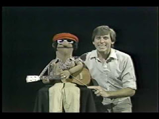

Puppet Fusion Question
5/18/2012
Question: I found a nice one at a second hand store. I'm thinking about turning him into a rod puppet or a marionette. I have info on the latter. But nothing on working a rod puppet. My Course has a little on it! But I didn't see anything on working two arms yet! Do you have any advice? Randy Sunart
* * * *
From Mr. D: Am I correct to understand you have a ventriloquist doll you are wanting to convert to a rod puppet or marionette? I don't know anyone who has done that, but the newer Goldberger dolls have arms and legs loosely jointed. I would guess they could be strung to be used as a marionette. You would like need to weight the feet in some manner.
Ventriloquists often fasten an elbow rod to one arm of the figure so the arm next to the ventriloquist can be animated. And I have heard from vents who were going to try to fasten one rod to each wrist of a vent figure so the could try to manipulate both arms together, rod-puppet style. But I have not heard from anyone claiming to have done so successfully. (Other than on a soft style vent puppet such as Dan Horn does so skillfully.) Maybe readers would like to comment on this matter.
* * * *
From Mr. D: Am I correct to understand you have a ventriloquist doll you are wanting to convert to a rod puppet or marionette? I don't know anyone who has done that, but the newer Goldberger dolls have arms and legs loosely jointed. I would guess they could be strung to be used as a marionette. You would like need to weight the feet in some manner.
 |
| Dan Horn (year unknown) |
{kind=link}
Ventriloquists often fasten an elbow rod to one arm of the figure so the arm next to the ventriloquist can be animated. And I have heard from vents who were going to try to fasten one rod to each wrist of a vent figure so the could try to manipulate both arms together, rod-puppet style. But I have not heard from anyone claiming to have done so successfully. (Other than on a soft style vent puppet such as Dan Horn does so skillfully.) Maybe readers would like to comment on this matter.